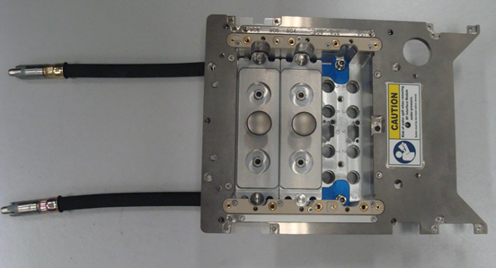
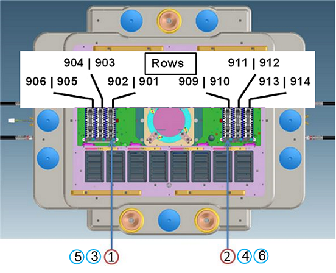
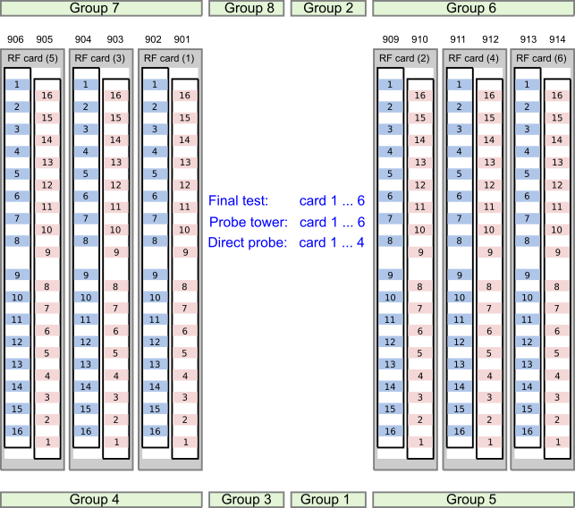
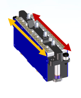

Wave Scale RF with RFIM-6/RFIM-8 pogo pin assignment
The four RF subsystems of the Wave Scale RF base card are accessed through the RF interface modules located on the DUT interface. One RF interface module provides access to the 32 RF ports.
| Supported V93000 systems : EXA Scale (SmarTest 8), Smart Scale (SmarTest 8) |
One WSRF base card supports one RF interface module. There are 6 locations for RF interface modules distributed on each side of the DUT interface.
The following components are used to access the ports of the Wave Scale RF cards:
- The DUT Interface adapter
- The RF Interface Module
- The cable assembly.

Refer to the following figure for the mapping of RF interface module numbers (installation sequence) to row numbers. The table shows the pogo pin numbering of WSRF cards.
|
 |
 |
RF Interface Module
The Wave Scale RF interface features 16 outer ports and 16 inner ports. The following illustration shows how to access the ports of the first installed Wave Scale RF card.
The inner ports are addressed via pogo 901 (01....16), shown in red, the outer ports are addressed via pogo 902(01...16), shown in yellow. Inner Ports are the ports next to the center of the DUT interface.

Functional changes
- Introduced in SmarTest 8.0.2